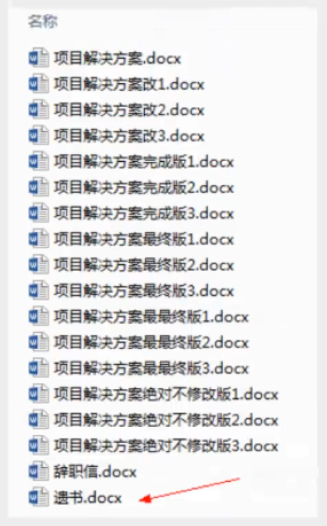
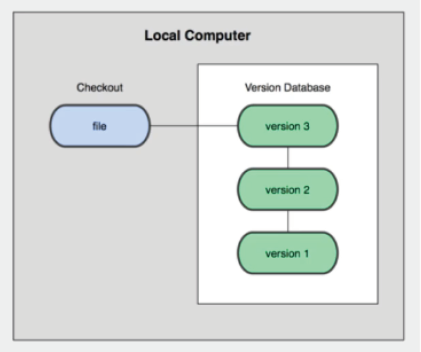
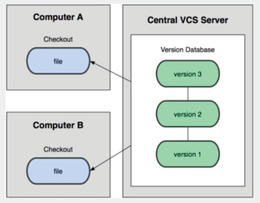
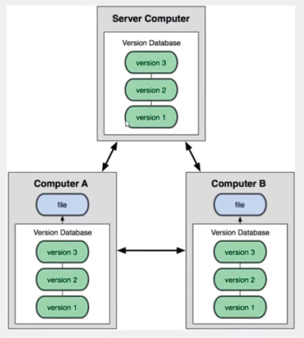
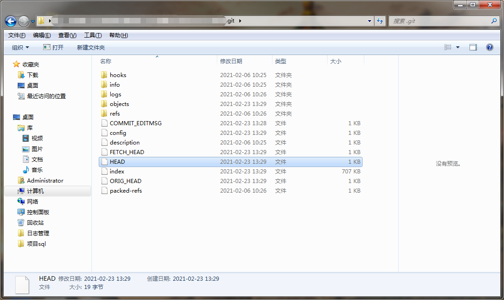
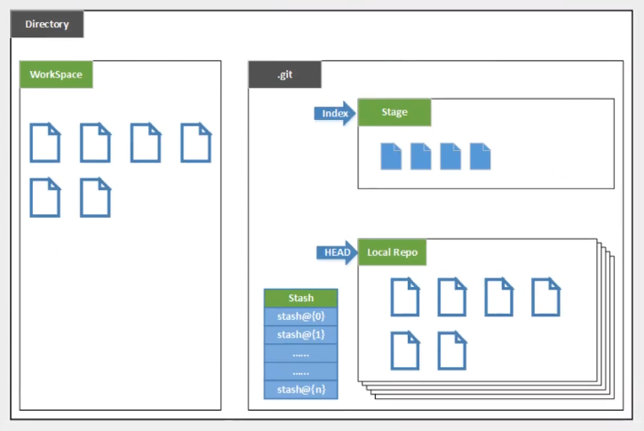

版本控制
什么是版本控制、版本迭代、版本管理器
版本控制( Revision control )是一种在开发的过程中用于管理我们对文件、目录或工程等内容的修改历史，方便查看更改历史记录,备份以便恢复以前的版本的软件工程技术。
● 实现跨区域多人协同开发
● 追踪和记载一个或者多个文件的历史记录
● 组织和保护你的源代码和文档
● 统计工作量
● 并行开发、提高开发效率
● 跟踪记录整个软件的开发过程
● 减轻开发人员的负担,节省时间,同时降低人为错误
简单说就是用于管理多人协同开发项目的技术。
手动控制版

版本控制
版本控制包括：检入检出控制、分支和合并、历史记录。
1．检入检出控制
软件开发人员对源文件的修改不能在软件配置管理库中进行，对源文件的修改依赖于基本的文件系统并在各自的工作空间下进行。为了方便软件开发，需要不同的软件开发人员组织各自的工作空间。一般说来，不同的工作空间由不同的目录表示，而对工作空间的访问，由文件系统提供的文件访问权限加以控制。访问控制需要管理各个人员存取或修改一个特定软件配置对象的权限。开发人员能够从库中取出对应项目的配置项进行修改，并检入到软件配置库中，对版本进行“升级”；配置管理人员可以确定多余配置项并删除。同步控制的实质是版本的检入检出控制。检入就是把软件配置项从用户的工作环境存入到软件配置库的过程，检出就是把软件配置项从软件配置库中取出的过程。检人是检出的逆过程。同步控制可用来确保由不同的人并发执行的修改不会产生混乱。
2．分支和合并
版本分支(以一个已有分支的特定版本为起点，但是独立发展的版本序列)的人工方法就是从主版本——称为主干上拷贝一份，并做上标记。在实行了版本控制后，版本的分支也是一份拷贝，这时的拷贝过程和标记动作由版本控制系统完成。版本合并(来自不同分支的两个版本合并为其中一个分支的新版本)有两种途径，一是将版本A的内容附加到版本B中；另一种是合并版本A和版本B的内容，形成新的版本C。
3．历史记录
版本的历史记录有助于对软件配置项进行审核，有助于追踪问题的来源。历史记录包括版本号、版本修改时间、版本修改者、版本修改描述等最基本的内容，还可以有其他一些辅助性内容，比如版本的文件大小和读写属性。
常见的版本控制工具
● Git
● SVN ( Subversion )
● CVS ( Concurrent Versions System )
● VSS ( Micorosoft Visual SourceSafe )
● TFS ( Team Foundation Server )
● Visual Studio Online
GIT与SVN的区别
本地版本控制(如RCS)
记录每次更新，对每个版本做一个快照，如将每次更新做备份然后按日期排版仅适用于个人

集中版本控制(如 SVN)
所有的版本数据都保存在服务器上,协同开发者从服务器上同步更新或上传自己的修改所有的开发者都与该服务器做交互，若该服务器出现问题，则将无法上传及获取代码，一般解决方法为定期备份代码

分布式版本控制(如git)

git基本理论(核心)
分支内容存储在HEAD中

1 | ref: refs/heads/master |
工作区域
git本地有三个工作区域，工作目录(Working Directory)、暂存区(Stage Index)、资源库(Repository或Git Directory)。如果在加上远程的git仓库(Rermote Directory)就可以分为四个工作区域。文件在这四个区域之间的转换关系如下：

Working Directory：工作区，就是平时存放项目代码的地方
Index / Stage ：暂存区,用于临时存放你的改动，事实上它只是一个文件,保存即将提交到文件列表信息
Repository: 仓库区(或本地仓库),就是安全存放数据的位置 ,这里面有你提交到所有版本的数据。其中HEAD指向最新放入仓库的版本
Remote : 远程仓库（github或gitee码云）,托管代码的服务器，可以简单的认为是你项目组中的一台电脑用于远程数据交换
其中开发者仅需管理Working Directory和Remote，暂存区和仓库区使用命令操作即可
下图可理解为git管理的项目的示意图:
Directory：整个项目
WorkSpace：代码文件
.git(隐藏文件夹)：其中包括Index暂存区及Head目录
